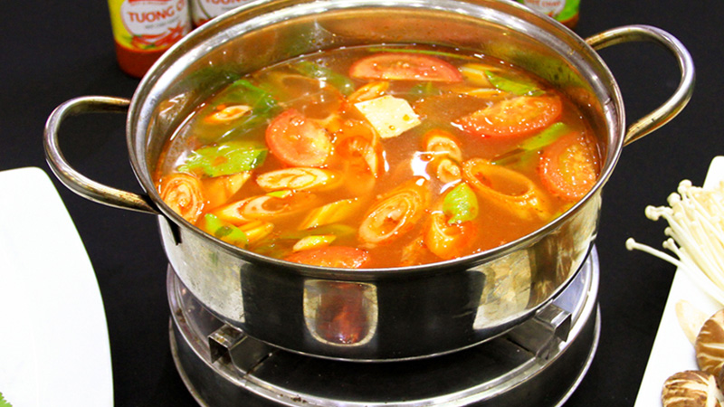
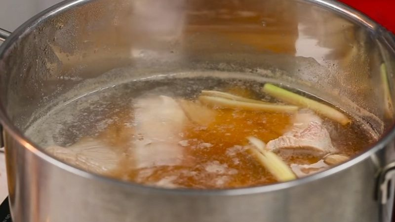

Làm lẩu thái tại nhà
Vào những ngày thời tiết lạnh lạnh, thèm một nồi lẩu và quây quần bên gia đình, bạn bè, đồng nghiệp cùng sẻ chia những câu chuyện thì còn gì bằng. Cùng tìm hiểu công thức làm lẩu thái đơn giản tại nhà mà ngon ngất ngây.
Từ lâu, lẩu Thái đã trở thành một món ăn quen thuộc với nền ẩm thực Việt bởi hương vị chua cay, ngọt mặn đầy đủ cùng với những biến tấu ngon không tưởng. Lẩu thái có cách làm vừa đơn giản lại có giá rất bình dân mà lại cực kỳ dễ ăn. Hôm nay, hãy cùng vào bếp với công thức làm lẩu Thái đơn giản tại nhà mà ngon ngất ngây, không thua gì ở tiệm nha.
1. Nguyên liệu làm nước lẩu thái.
- 3 bộ xương gà
- 1 củ riềng
- 20 nhánh sả
- 20 củ hành khô
- Me chín
- Nấm hương
- 500g lá mùi tàu
- 1 trái bắp
- Nước cốt dừa
- Vài lá chanh
- Gia vị: Đường, hạt nêm, muối, bột ngọt
2. Làm nước lẩu thái
Bước 1: Sơ chế nguyên liệuBạn chỉ cần lấy xương gà trần sơ qua với nước sôi, sau đó vớt xương gà ra rửa sạch lại một lần nữa.
Sau đó, bạn băm nhuyễn sả và cắt khúc vừa ăn khoảng 5cm.
Cắt riềng thành từng lát mỏng, hành khô bóc vỏ để nguyên củ.
Nấm hương rửa sạch rồi cắt đôi. Lá ngò gai rửa sạch, cắt làm 3 lát.
Ngâm me trong nước ấm rồi lọc lấy nước cốt.
 Bước 2: Hầm nước dùng
Bước 2: Hầm nước dùng
Bạn cho xương gà, sả và riềng thái sợi vào nồi nước. Bật bếp lớn, đun sôi nước dùng xương gà rồi hạ lửa nhỏ, sau đó cho hành khô và nấm đông cô vào.
Sau đó, bạn cho nước cốt me vào đồng thời thêm vào 1 muỗng canh đường, 1 muỗng cà phê hạt nêm, 1 muỗng cà phê muối, 1 muỗng cà phê bột ngọt.
Bạn tiếp tục ninh xương trong khoảng 30 phút, cuối cùng cho lá ngò gai vào và đun thêm 5 phút nữa thì tắt bếp.
Vớt bỏ phần cái ra chỉ để lại phần nước rồi bạn thêm vào nước cốt dừa và lá chanh, để lá chanh trong nồi và đảo đều trong 1 phút.
Bước 3: Thành phẩmBạn cắt bắp thành từng khúc dài 3 - 4cm rồi cho vào nồi lẩu để nước lẩu Thái được ngọt hơn.

3. Thưởng thức
Nồi nước lẩu Thái không chỉ có màu đỏ của gấc vô cùng đẹp mắt lại có mùi thơm của các loại gia vị và vị ngọt từ nước hầm xương gà.